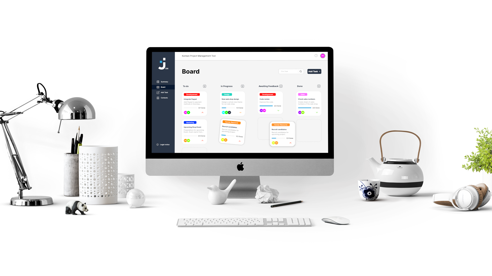

<div class="project-container">

    

    <div class="info-container">
        <h3>Join</h3>
        <h4>JavaScript | HTML | CSS</h4>
        <p>Task manager inspired by the Kanban system. 
            Create and organize tasks using the drag and drop function, assign these to users, 
            and use specific categories.</p>

        <div class="links">
            <div class="border"> <p>Live Test</p></div>
            <div class="border"><p>Github</p></div>
        </div>
    </div>

</div>
